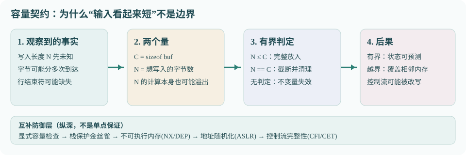

经典 Lab · Data / Bomb / Attack / 24
从比特到指令，再到程序的安全边界
会写 C 语言，不代表理解了每个运算符产生什么位、每条机器指令改变了什么状态，或一次不受限写入为什么有危险。三个经典 Lab 刚好把这三层连接起来：先证明表达式，再解释机器行为，最后识别越界与控制流风险。
本章课程编号 24 不等于原书章节号。实验以 CMU CS:APP 3e 官方 handout 为准；不同教学版本和个人实例的参数与题目可能不同。仅在获授权的教学环境内进行安全实验。
24.1 三个实验，其实在追问同一件事
源码是人写的抽象，机器运行的是带有精确表示和副作用的状态变化。Data Lab 训练把布尔规则翻译成位表达式；Bomb Lab 训练从汇编推回控制流与数据关系；Attack Lab 则把“程序未验证写入的边界”与“控制流的完整性”联系起来。
官方课程把这些实验分别发布；实际题面、工具、提交方式要看课程发放的材料。不要把网上某个 bomb 的六个答案或某个 attack 实例中的地址当成普遍解。
24.2 Data Lab：运算符少了，为什么理解反而更深？
Data Lab 的整数题常限制可用运算符与次数，并规定具体宽度、补码与移位语义。约束让你不能直接用高层运算符“绕过”问题，而必须从真值表推导。例如仅用按位非和按位与表达异或：
/* 可独立编译的 C11 位表达式；unsigned 消除有符号溢出的干扰 */
unsigned xor_with_and_not(unsigned x, unsigned y) {
return ~(~(x & ~y) & ~(~x & y));
}这不是靠经验猜出来的“黑魔法”：x & ~y 表示“x 有这一位、y 没有”，~x & y 表示相反情况；德摩根律把两种情况的“或”改写成只含 ~ 和 &。
逐位真值表：两次按键就能检查一条等价式
这里一次处理一个逻辑位；在 C 中同一恒等式对无符号整数的每个二进制位并行成立。
标准 C 与 Lab 模型要分开：原题若假设 32 位补码及算术右移，1 << 31 常被用作 TMin 的 Lab 式写法，但把正的有符号 1 左移进符号位在 ISO C 中不是可移植的构造。写通用 C 时，应使用 INT_MIN，或明确依赖无符号表示规则。类似地，~x+1 对 INT_MIN 的有符号求值可能越界。
验证不应只测少量“看起来正确”的样本。整数题应覆盖零、全一、符号边界及随机位模式；浮点题要分别测零、非规格化数、正常数、无穷大和 NaN 等分类，并区分“位模式操作”和“浮点算术”。
24.3 Bomb Lab：从比较指令回到问题本身
Bomb Lab 给你的是可执行文件而非源代码。核心练习是形成一个可检验的推理闭环：找到当前阶段入口、标出分支条件、追踪数据来自哪里、用调试器验证假设。不同实例的常量和阶段结构可能不同，不能预设第几关一定是 Fibonacci 或特定跳转表。
- 建立地图：在授权的课程二进制上用
objdump -d或disassemble查看函数边界、调用关系及分支。 - 锁定观察点：GDB 用
break、run、info registers、x/等检查参数、局部数据与条件跳转；寄存器的意义取决于目标 ABI 和当前指令。 - 写出可解释的约束：把循环、比较、递归和表索引转为纸面关系，预测什么输入会令某个分支成立。
- 用实验驳斥假设：仅在许可的教学环境内运行自己的实例，记录输入、断点状态和实际分支，不要把一次成功当成通用结论。
以 x86-64 System V 为例，函数的前几个整数/指针参数通常由寄存器传递，但不能简单地把每次 cmp 旁边的 %rsi 当成“要比较的整数”：必须结合此前的数据流。调试器显示的是具体机器状态，不是省略上下文的解题答案。
24.4 Attack Lab：正确认识五个阶段，而不是三个
官方 CS:APP 3e Attack Lab 使用两个特制目标：ctarget 允许代码注入（Code Injection，CI）的教学条件，rtarget 则用于理解不可执行栈、地址随机化背景下的返回导向编程（ROP）。这是刻意弱化防护的课程环境，并非现实系统的默认配置。
| 官方阶段 | 目标程序 | 学习要点 |
|---|---|---|
| Phase 1 | ctarget | 控制流重定向到既有 touch1（CI 目标程序，但无需注入新代码） |
| Phase 2 | ctarget | 参数传递与 touch2，代码注入 |
| Phase 3 | ctarget | 字符串参数及其生命周期，touch3，代码注入 |
| Phase 4 | rtarget | 复用已有指令片段，ROP 到 touch2 |
| Phase 5 | rtarget | 更复杂的 ROP 数据流，目标 touch3 |
这张表按官方讲义的 Figure 1 归纳，不包含任何个人实例的地址或可直接移植的利用字节串。学习重点在漏洞前提和安全机制为何限制攻击面：无边界复制可能破坏相邻内存；不可执行内存不允许把数据直接当代码执行；地址空间随机化增加地址预测难度；控制流完整性防护还需要额外机制。
24.5 同样一段输入，差别在于是否建立容量边界
安全代码必须能回答三个问题：目标缓冲区有多大？最多写入多少字节？字符串结尾是否还留有空间？比起“输入看起来短”，明确的容量契约才是可靠的防线。
/* C11 防御性例子：有大小上限的读取，检查是否被截断 */
char buf[16];
if (fgets(buf, sizeof buf, stdin) != NULL) {
size_t n = strlen(buf);
if (n > 0 && buf[n - 1] == '\n') {
buf[n - 1] = '\0';
/* 接下来才处理完整的一行 */
} else {
/* 行可能被截断；按协议清理余下输入或拒绝 */
}
}该代码片段假定已经包含 <stdio.h> 与 <string.h>，目的是说明容量检查，并非完整协议解析器；EOF 恰好结束于行末时，还应结合输入协议决定是否接受。栈保护、NX/DEP、ASLR 和 CET/CFI 可以纵深防御，但具体支持与启用状态依赖 CPU、操作系统和构建配置，不意味着某一类控制流攻击永远不可能。
24.6 先做一个可复现、无漏洞利用的位运算练习
用仓库中的 examples/olah-ch24-bitlogic.c 验证上面的无符号异或恒等式：cc -std=c11 -Wall -Wextra -Werror -pedantic examples/olah-ch24-bitlogic.c -o /tmp/ch24 && /tmp/ch24。程序检查边界输入和确定性的伪随机样本，通过时输出 bitlogic-ok。这是 Data Lab 思维练习，不是官方自动评分系统或完整 Lab 的替代。
官方资源
CMU CS:APP 3e Labs、Attack Lab 官方讲义（阶段定义见 Figure 1）、CS:APP 学生资源。应遵循课程许可、实验隔离与提交规定。
技术深描 · 24 / LAB REASONING LOOP
“放得下”到底由哪两个量决定？把安全边界写成一个不变量

Data Lab 让位规则可推导，Bomb Lab 让机器状态可解释，Attack Lab 把“边界被破坏后哪些假设失效”显式化。三者背后是同一个可写成不变量的命题：一次写入只有在其长度与目标对象容量保持一致时才安全。关键在于，“容量”不是写入方总能自动知道的信息。
| 会被忽略的问题 | 需要维持的不变量 | 可验证手段 |
|---|---|---|
| 写入长度与目标容量脱节 | 写入长度 N ≤ C；若保留结尾 N ≤ C−1 | 写入前后检查边界哨兵；用返回值报告截断 |
数组在传参中退化为指针，sizeof 不再等于容量 | 容量必须作为显式参数随指针一起传递 | 接口签名携带 size_t cap，编译期无法推断的容量不允许隐式获得 |
| 长度由“元素个数 × 元素大小”算出 | 该乘积不得在 size_t 中回绕 | 先做除法判断再相乘；分配前检查溢出 |
| “输入看起来短”被当作充分条件 | 是否被截断必须有明确状态 | 区分“完整 / 截断 / 拒绝”三态，而不是只返回一个指针 |
因此正确的容量检查至少要求三点：检查所用的长度等于真正被消费的长度；容量来自对象本身而非猜测；越界前已经做出拒绝或截断决定。栈保护、NX/DEP、ASLR 与 CFI/CET 是不同层面的纵深防御，其支持与启用依赖 CPU、操作系统与构建配置，不能把它们当成“不可能被利用”的证明。
python3 examples/deep-ch24-28-models.py 24
cc -std=c11 -Wall -Wextra -Werror -pedantic examples/olah-ch24-bitlogic.c -o /tmp/ch24 && /tmp/ch24第一个命令运行一个纯标准库的确定性模型：它用固定容量 16 的缓冲区验证“完整 / 截断”两种判定，并用除法检查一个会回绕的 size_t 乘法；通过时打印 24:ok。语料依据 Attack Lab 官方讲义中 getbuf 对写入长度的处理，以及 ISO C 对有符号移位与整数提升的规定；模型是教学示意，不是对某个实例的复现。